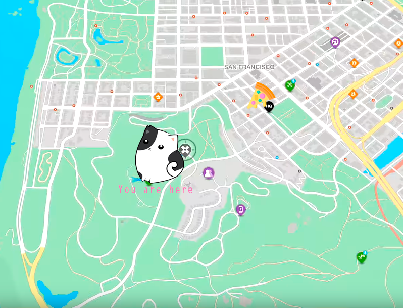

<!--
  Generated template for the ContactPage page.

  See http://ionicframework.com/docs/components/#navigation for more info on
  Ionic pages and navigation.
-->
<ion-header>

  <ion-navbar color="danger">
    

    <button ion-button menuToggle>
      <ion-icon name="arrow-back"></ion-icon>

    </button>
    <ion-title>Contact</ion-title>

  </ion-navbar>

</ion-header>


<ion-content padding>
<ion-card>


  


  <ion-fab left top>
    <button ion-fab>
      <ion-icon name="map"></ion-icon>
    </button>
  </ion-fab>

  <ion-item>
    <ion-icon name="heart" item-start large></ion-icon>
    <h2>Meow ♥</h2>
    <p>Av. Cute kitty 1488
   </p>
  </ion-item>

 
  <ion-item>
    <span item-start>5 min</span>
    <span item-start>(so close)</span>
    <button ion-button icon-start clear item-end>
      <ion-icon name="navigate"></ion-icon>
      Start
    </button>
  </ion-item>

</ion-card>

 <ion-card>
    
    <div class="card-title">Telefono</div>
    <div class="card-subtitle">(33)56-65-889</div>
  </ion-card>

</ion-content>
